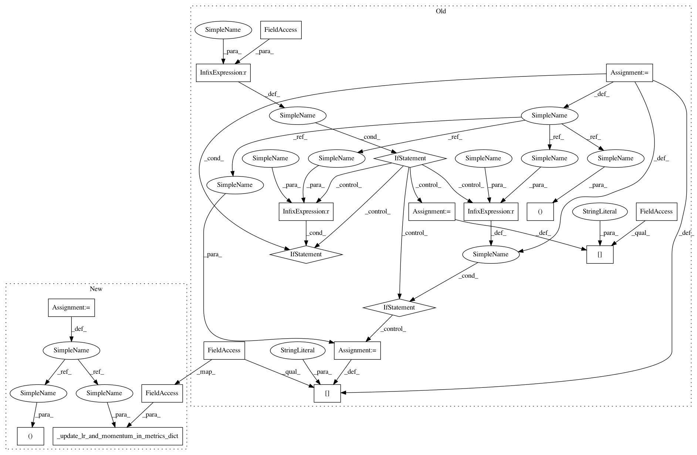

92ec6f9f8790d0176fbafbf711d5a541b5c09e60,catalyst/callbacks/scheduler.py,SchedulerCallback,step_batch,#SchedulerCallback#Any#,128
Before Change
Args:
runner: current runner
lr, momentum = self._scheduler_step(scheduler=self._scheduler)
if self.scheduler_key is not None:
runner.batch_metrics[f"lr/{self.scheduler_key}"] = lr
if momentum is not None:
runner.batch_metrics[
f"momentum/{self.scheduler_key}"
] = momentum
else:
runner.batch_metrics["lr"] = lr
if momentum is not None:
runner.batch_metrics["momentum"] = momentum
def step_epoch(self, runner: "IRunner") -> None:
Update momentum in runner.
Args:
After Change
Args:
runner: current runner
lr_list, momentum_list = self._scheduler_step(
scheduler=self._scheduler
)
self._update_lr_and_momentum_in_metrics_dict(
runner.batch_metrics, lr_list, momentum_list
)
def step_epoch(self, runner: "IRunner") -> None:
Perform scheduler step and update epoch metrics
In pattern: SUPERPATTERN
Frequency: 3
Non-data size: 19
Instances
Project Name: catalyst-team/catalyst
Commit Name: 92ec6f9f8790d0176fbafbf711d5a541b5c09e60
Time: 2020-12-04
Author: mr.and.kul@gmail.com
File Name: catalyst/callbacks/scheduler.py
Class Name: SchedulerCallback
Method Name: step_batch
Project Name: Scitator/catalyst
Commit Name: 92ec6f9f8790d0176fbafbf711d5a541b5c09e60
Time: 2020-12-04
Author: mr.and.kul@gmail.com
File Name: catalyst/callbacks/scheduler.py
Class Name: SchedulerCallback
Method Name: step_batch
Project Name: Scitator/catalyst
Commit Name: 92ec6f9f8790d0176fbafbf711d5a541b5c09e60
Time: 2020-12-04
Author: mr.and.kul@gmail.com
File Name: catalyst/callbacks/scheduler.py
Class Name: SchedulerCallback
Method Name: step_epoch